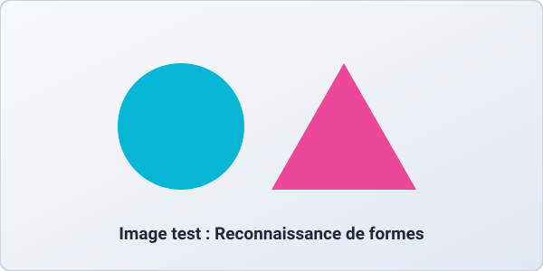

Comment l'IA « voit-elle » les pixels ?
Avant qu'un réseau à convolution (CNN) n'identifie un objet, il applique des filtres mathématiques pour simplifier l'image : suppression des couleurs superflues, mise en valeur des contours ou réduction du bruit.

filter: none;
filter: grayscale(100%);
filter: contrast(200%);
filter: blur(3px);
Résultat de l'inférence :
Cercle détecté : 98.4% | Triangle détecté : 94.1%